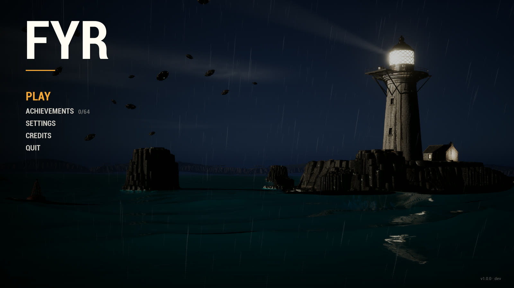

Day 4 Sunday 15 November
All times in this log are Danish time (CET, UTC+1): 6 hours ahead of New York, 9 hours ahead of Los Angeles. Point at a time to see it in your own.
Ready for the hand-in
1 picture 5 min read
Checkpoint The final package for the hand-in, 20:25
This entry covers Sunday from 19:50 to 20:25. It is the last one before the developer hands the game in.
The developer played the package with the new finale and found that everything works. He had a few last notes and one idea.
The sea and the rain, halved
The sea was too loud, on the title screen and when walking on the rock. Its two sounds are the steady bed of the sea and the waves breaking on the rock. They were mixed louder than the rain and the wind: in a full storm the bed played at 0.8, against 0.6 for the rain and 0.55 for the wind. Both sea sounds are now at half that level, six decibels quieter.
A few minutes later the developer asked for much quieter rain as well. The rain plays in five places: the storm round the lighthouse, the rain on its iron, the storm heard on the rock before READY, the walk to the tower, and the roof of the hut. All five were halved the same way.
DLAA by default
The DLSS mode used to start at Quality, which draws two thirds of the screen's resolution and lets DLSS rebuild the rest. That is the safe choice for an unknown PC. The jam's judges play on powerful PCs, so the game now starts at DLAA: the full resolution, with DLSS only smoothing the edges. That is the better picture. A player who has already chosen keeps their choice.
Switching ray tracing on
While trying the settings, the developer saw the game stop for about ten seconds when he chose ray tracing "On with shadows". That is not a fault. Ray tracing is off by default, and switching it on makes the engine build its ray tracing structures for every model in the scene and prepare the ray tracing shaders for every material. That happens once, at the switch, and the game runs smoothly after it.
The title screen without its tower
On the title screen the lighthouse showed as a lit glass drum floating over the rock, with no tower under it. The title's shot of the lighthouse, as if from a boat at sea, uses the gun's own camera. The great lens is fired from inside the lantern, so while it is the chosen weapon the tower is hidden and the lamp room is drawn in its place. The developer's last game had ended with the lens chosen. The title screen then counted as "inside the lantern" and hid the tower. The lamp room now takes over only during a night, never on the title screen.


An idea for after the jam
The developer asked whether the keeper could leave the gallery during a night: a second of black, then on foot at the foot of the tower, watching his turrets fight from the rock, with a key shown under the three weapons. Walking on the rock already exists, but only before READY. During a night it would touch almost everything that is now finished and checked: the gun's controls, who holds the camera, the boss's finale (which stands the keeper by the gun), the tablet, and the lamp going dark while he is below. That was estimated at two to three hours with proper testing, in the last two hours before the hand-in. The developer chose to keep it for after the jam.
The numbers, counted again
The front page's numbers were counted again from the repository and the records. They now stand at 41,739 lines of C++, 135 Rodin jobs, 130 kinds of 3D model in the game, 596 pictures from the image model, 275 synthesised sound effects, 50 spoken lines, 8 pieces of music and about 500 commits.
One line was taken out. It said three Poly Haven assets were used, because three surfaces were fetched on the first day and named in the declaration. None of them was ever imported: no file of the game's content and no line of its code names them. Every surface in the game is our own. The counter now counts only what is in the game, and the declaration says so.
What is handed in
The final package is one zip of under a gigabyte. It holds the game for 64-bit Windows and the runtime it needs, and nothing of the project itself. It passes every automatic check: the zip's name and size, the game in it, no project files, the runtime, and the gameplay video's length, size and sound. Its finale is the one in the entry before this, with the sea, the rain, the title screen and the DLSS default changed as above.
The developer hands in the zip, the gameplay video, the cover picture and the page's text himself, with the tools listed: Rodin among them, and NVIDIA's Kimodo with its text encoder, Built with Meta Llama 3.
Corrections after a last review
After the hand-in, four agents reviewed the entry once more against the rules and every licence, reading only, and a fifth tried to disprove each serious finding. One claim was wrong, and two lists were incomplete:
- DLSS Frame Generation is not in the game. It was tried on the first rebuild day and worked (see the entry of 13 November), but its plugin never went into the packaged build, and the settings row reads "not available". The entry's text for NVIDIA and the game's page named it all the same. That was a mistake in the texts, not in the game. The game has DLSS as DLAA, Ray Reconstruction with ray tracing on, and Reflex.
- A few stock motions from Rodin are in the build. When Rodin rigged the keeper, it added some motion presets from its catalogue: idle, walk and sitting. They stay in the game as fallbacks. The keeper's motion seen in play is the AI-generated Kimodo motion. They are now listed with the sourced assets.
- The design notes of 11 November (a design document, a schedule and an asset list, written after the theme was revealed) were missing from the list of what was prepared before the jam.
The developer corrects the entry's texts and the game's page to match before the jam closes. The game itself and the video are unchanged.
Handed in
The developer submitted FYR on Sunday evening at about 21:15 Danish time, five and three-quarter hours before the jam closed. The entry is on the jam's page: FYR in the 2026 Epic AI MegaJam. The game can be downloaded from its own page on itch.io. Once the jam closes, this log is not changed again.